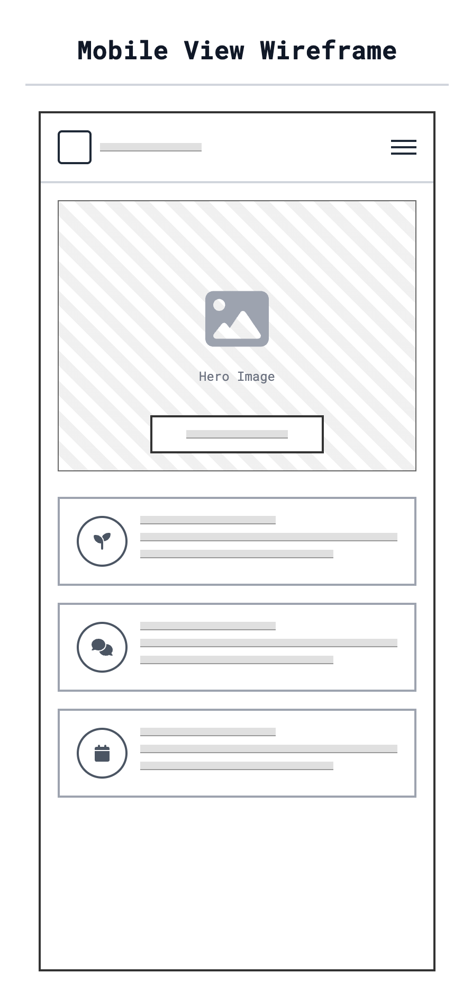
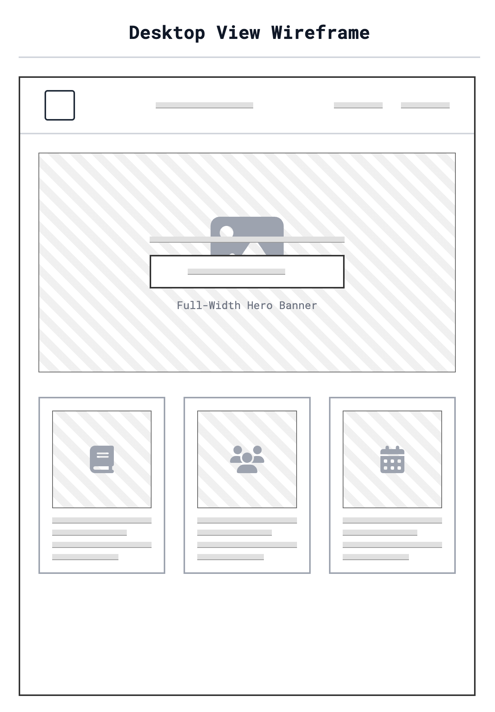

Site Name
GreenThumb Community
I chose this name because it clearly communicates the website's focus on gardening and community interaction. It feels welcoming and encourages users who want to develop their "green thumb".
Optional Domain: greenthumbcommunity.org
Site Purpose
The GreenThumb Community website serves as a hub for local gardeners to connect, share resources, and learn. The site will provide:
- Planting guides specific to our local climate zone.
- A community forum for asking questions and sharing tips.
- Information on upcoming seed swap events and community garden workdays.
Scenarios
Questions our target audience might ask:
- "I am new to gardening in this area. What vegetables grow best here in the spring?"
- "I have extra tomato seedlings. How can I find someone to trade with?"
Color Schema
The color palette is inspired by nature, using deep greens and earthy browns to evoke a sense of growth and soil.
Primary
Secondary
Accent
Background
Usage:
- Primary (Forest Green): Header, Footer, Main Buttons.
- Secondary (Dark Brown): Headings, Important text highlights.
- Accent (Light Green): Borders, Secondary buttons, Hover states.
- Background (Tinted White): Main page background to reduce eye strain.
Typography
We have selected a serif font for headings to give a classic, organic feel, paired with a clean sans-serif for readability in the body text.
Heading Font: Lora
Body Font: Roboto
Usage:
- Lora: Used for all H1, H2, and H3 headings.
- Roboto: Used for all paragraphs, lists, and navigation text.
Wireframes
Below are the wireframe sketches for the Home Page in both Mobile and Desktop views.
Mobile View
Single column layout with hamburger menu, hero image, and vertical list of features.
Desktop View
Three column layout with horizontal navigation, large hero banner, and side-by-side feature cards.